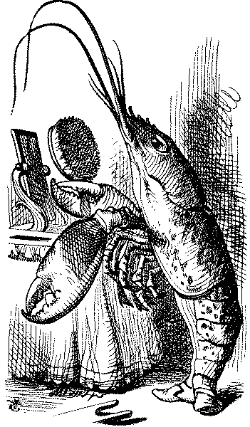

THE Mock Turtle sighed deeply, and drew the back of one flapper across his eyes. He looked at Alice, and tried to speak, but, for a minute or two, sobs choked his voice. "Same as if he had a bone in his throat," said the Gryphon: and it set to work shaking him and punching him in the back. At last the Mock Turtle recovered his voice, and, with tears running down his cheeks, went on again:---
"You may not have lived much under the sea--" ("I haven't," said Alice) "and perhaps you were never even introduced to a lobster--" (Alice began to say, "I once tasted---" but checked herself hastily, and said, "No, never") "--so you can have no idea what a delightful thing a Lobster Quadrille is!"
"No, indeed," said Alice. "What sort of a dance is it?"
"Why," said the Gryphon, "you first form into a line along the sea-shore---"
"Two lines!" cried the Mock Turtle. "Seals, turtles, and so on; then, when you've cleared the jelly-fish out of the way---"
"That generally takes some time interrupted the Gryphon.
"--you advance twice---"
"Each with a lobster as a partner!" cried the Gryphon.
"Of course," the Mock Turtle said: "advance twice, set to partners---"
"--change lobsters, and retire in same order," continued the Gryphon.
"Then you know," the Mock Turtle went on, "you throw the---"
"The lobsters!" shouted the Gryphon, with a bound into the air.
"--as far out to sea as you can---"
"Swim after them!" screamed the Gryphon,.
"Turn a somersault in the sea!" cried the Mock Turtle, capering wildly about.
"Change lobsters again!" yelled the Gryphon.,,
"Back to land again, and--that's all the first figure," said the Mock Turtle, suddenly dropping his voice; and the two creatures, who had been jumping about like mad dogs, sat down again very sadly and quietly, and looked at Alice.
"It must be a very pretty dance," said Alice, timidly.
"Would you like to see a little of it?" said the Mock Turtle.
"Very much indeed," said Alice. "Come, let's try the first figure!" said the Mock Turtle to the Gryphon. "We can do without lobsters, you know. Which shall sing?"
"Oh, you sing," said the Gryphon. "I've forgotten the words."
So they began solemnly dancing round and round Alice, every now and then treading on her toes when they passed too close, and waving their forepaws to mark the time, while the Mock Turtle sang this, very slowly and sadly:---
"Will you walk a littlefaster?" said a whiting to a snail, "There's a porpoise close behind us, and he's treading See how eagerly the lobsters and the turtles all advance. They are waiting on the shingle--will you come and join the dance? Will you, won't you, will you, won't you, will you join the dance? Will you, won't you, will you, won't you, won't you join the dance? "You can really have no notion how delightful it will be, When they take us up and throw us, with the lobsters, out to sea." But the snail replied, "Too far, too far!", and gave a look askance--- Said he thanked the whiting kindly, but he would not join the dance. Would not, could not, would not, could not, would not join the dance. Would not, could not, would not, could not, could not join the dance. "What matters it how far we go?" his scaly friend replied. "There is another shore, you know, upon the other side. The further off from England the nearer is to France--- Then turn not pale, beloved snail, but come and join the dance. Will you, won't you, will you, won't you, won't you join the dance? Will you, won't you, will you, won't you, won't you join the dance?"
"Thank you, it's a very interesting dance to watch," said Alice, feeling very glad that it was over at last: "and I do so like that curious song about the whiting!"
"Oh, as to the whiting," said the Mock Turtle, "they--you've seen them, of course?"
"Yes," said Alice, "I've often seen them at dinn---" she checked herself hastily.
"I don't know where Dinn may be," said the Mock Turtle, "but if you've seen them so often, of course you know what they're like."
"I believe so," Alice replied thoughtfully. "They have their tails in their mouths--and they're all over crumbs."
"You're wrong about the crumbs," said the Mock Turtle: "crumbs would all wash off in the sea. But they have their tails in their mouths; and the reason is---" here the Mock Turtle yawned and shut his eyes. "Tell her about the reason and all that," he said to the Gryphon.
"The reason is," said the Gryphon, "that they would go with the lobsters to the dance. So they got thrown out to sea. So they had to fall a long way. So they got their tails fast in their mouths. So they couldn't get them out again. That's all."
"Thank you," said Alice, "it's very interesting. I never knew so much about a whiting before."
"I can tell you more than that, if you like," said the Gryphon. "Do you know why it's called a whiting ?"
"I never thought about it," said Alice. "Why?"
"It does the boots and shoes," the Gryphon replied very solemnly. Alice was thoroughly puzzled. "Does the boots and shoes!" she repeated in a wondering tone.
"Why, what are your shoes done with?" said the Gryphon. "I mean, what makes them so shiny?"
Alice looked down at them, and considered a little before she gave her answer. "They're done with blacking, I believe."
"Boots and shoes under the sea," the Gryphon went on in a deep voice, "are done with whiting. Now you know."
"And what are they made of?" Alice asked in a tone of great curiosity.
"Soles and eels, of course," the Gryphon replied rather impatiently: "any skimp could have told you that."
"If I'd been the whiting," said Alice, whose thoughts were still running on the song. "I'd have "said to the porpoise, "Keep back, please: we don't want you with us!' "
"They were obliged to have him with them," the Mock Turtle said: "no wise fish would go anywhere without a porpoise."
"Wouldn't it really?" said Alice in a tone of great surprise. "Of course not," said the Mock Turtle. "Why if a fish came to me, and told me he was going a journey, I should say, "With what porpoise ?' "
"Don't you mean "purpose'?" said Alice.
"I mean what I say," the Mock Turtle replied In an offended tone. And the Gryphon added, "Come, let's hear some of your adventures."
"I could tell you my adventures--beginning from this morning," said Alice a little timidly: "but it's no use going back to yesterday, because I was a different person then."
"Explain all that," said the Mock Turtle
"No, no! The adventures first," said the Gryphon in an impatient tone: "explanations take such a dreadful time."
So Alice began telling them her adventures from the time when she first saw the White Rabbit. She was a little nervous about it just at first, the two creatures got so close to her, one on each side, and opened their eyes and mouths so very wide, but she gained courage as she went on. Her listeners were perfectly quiet till she got to the part about her repeating, "You are old, Father William," to the Caterpillar and the words all coming different, and then the Mock Turtle drew a long breath, and said, "That's very curious."
"It's all about as curious as it can be," said the Gryphon.

"It all came different!" the Mock Turtle repeated thoughtfully. "I should like to hear her repeat something now. Tell her to begin." He looked at the Gryphon as if he thought it had some kind of authority over Alice.
"Stand up and repeat, " 'Tis the voice of the sluggard,'" said the Gryphon.
"How the creatures order one about, and make one repeat lessons!" thought Alice. "I might as well be at school at once." However, she got up, and began to repeat it, but her head was so full of the Lobster Quadrille, that she hardly knew what she was saying, and the words came very queer indeed:---
'Tis the voice of the Lobster: I heard him declare "You have baked me too brown, I must sugar my hair." As a duck with its eyelids, so he with his nose Trims his belt and his buttons, and turns out his toes. When the sands are all dry, he is gay as a lark, And will talk in contemptuous tones of the Shark: But, when the tide rises and sharks are around, His voice has a timid and tremulous sound.
"That's dirrerent from what I used to say when I was a child," said the Gryphon.
"Well, I never heard it before," said the Mock TurtIe; "but it sounds uncommon nonsense."
Alice said nothing; she had sat down with her face in her hands, wondering if anything would ever happen in a natural way again.
"I should like to have it explained," said the Mock Turtle.
"She can't explain it," hastily said the Gryphon. "Go on to the next verse."
"But about his toes?" the Mock Turtle persisted. "How could he turn them out with his nose, you know?"
"It's the first position in dancing," Alice said; but was dreadfully puzzled by it all, and longed to change the subject.
"Go on with the next verse," the Gryphon repeated: "it begins with the words 'I passed by his garden.'"
Alice did not dare to disobey' though she felt sure it would all come wrong, and she went on in a trembling voice:---
I passed by his garden, and marked, with one eye, How the Owl and the Panther were sharing a pie: The Panther took pie-crust, and gravy, and meat, While the Owl had the dish as its share of the treat. When the pie was all finished, the Owl, as a boon, Was kindly permitted to pocket the spoon: While the Panther received knife and fork with a growl, And concluded the banquet by---
"What is the use of repeating all that stuff," the Mock Turtle interrupted, "if you don't explain it as you go on? It's by far the most confusing thing I ever heard!"
"Yes, I think you'd better leave off," said the Gryphon: and Alice was only too glad to do so.
"Shall we try another figure of the Lobster Quadrille?" the Gryphon went on. "Or would you like the Mock Turtle to sing you a song?"
"Oh, a song please, if the Mock Turtle would be so kind," Alice replied, so eagerly that the Gryphon said, in a rather offended tone, "Hm! No accounting for tastes! Sing her 'Turtle Soup,' will you old fellow ?"
The Mock Turtle sighed deeply, and began, in a voice sometimes choked with sobs, to sing this:---
Beautiful Soup, so rich and green, Waiting in a hot tureen! Who for such dainties would not stoop! Soup of the evening, beautiful Soup! Soup of the evening, beautiful Soup! Beau--ootiful Soo--oop! Beau--ootiful Soo--oop! Soo--op of the e--e--evening, Beautiful, beautiful Soup! Beautiful Soup! Who cares for fish, Game, or any other dish? Who would not give all else for two p ennyworth only of beautiful Soup? Pennyworth only of beautiful Soup? Beau--ootiful Soo--oop! Beau--ootiful Soo--oop! Soo--oop of the e--e--evening, Beautiful, beauti--FUL SOUP!
"Chorus again!" cried the Gryphon, and the Mock-Turtle had just begun to repeat it, when a cry of "The trial's beginning!" was heard in the distance.
"Come on!" cried the Gryphon, and, taking Alice by the hand, it hurried off, without waiting for the end of the song.
"What trial is it?" Alice panted as she ran; but the Gryphon only answered, "Come on!" and ran the faster, while more and more faintly came, carried on the breeze that followed them, the melancholy words:
Soo--oop of the e--e--evening, Beautiful, beautiful Soup!